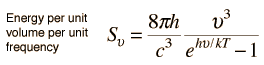
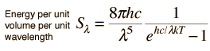

Planck Radiation Formula
From the assumption that the electromagnetic modes in a cavity were quantized in energy with the quantum energy equal to Planck's constant times the frequency, Planck derived a radiation formula. The average energy per "mode" or "quantum" is the energy of the quantum times the probability that it will be occupied (the Einstein-Bose distribution function):

This average energy times the density of such states, expressed in terms of either frequency or wavelength

gives the energy density , the Planck radiation formula.
|  | Example |
|  | Example |
The Planck radiation formula is an example of the distribution of energy according to Bose-Einstein statistics. The above expressions are obtained by multiplying the density of states in terms of frequency or wavelength times the photon energy times the Bose-Einstein distribution function with normalization constant A=1.
To find the radiated power per unit area from a surface at this temperature, multiply the energy density by c/4. The density above is for thermal equilibrium, so setting inward=outward gives a factor of 1/2 for the radiated power outward. Then one must average over all angles, which gives another factor of 1/2 for the angular dependence which is the square of the cosine.
| Major applications of the Planck formula |
Blackbody radiation concepts
| HyperPhysics***** Quantum Physics | R Nave |